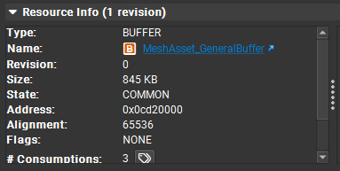
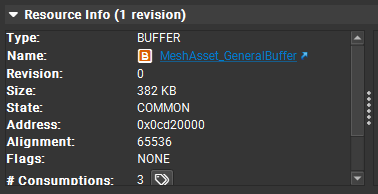
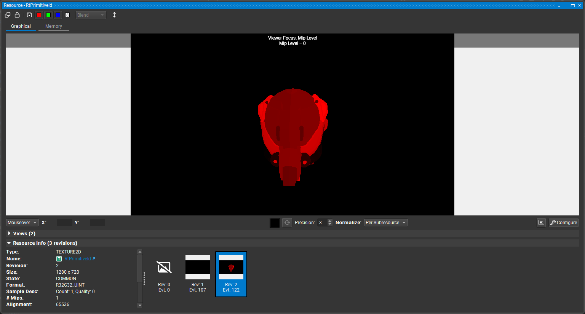
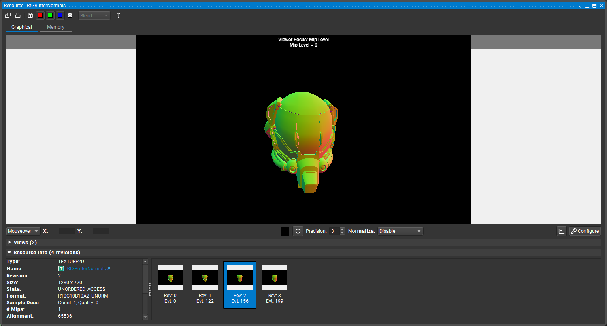

Everfrost Engine


Resume
Everfrost Engine is a work-in-progress project focused on modern graphics and engine systems programming. It explores techniques such as Visibility Buffer rendering, RHI-based API abstraction (DX12 now), bindless resources, and memory footprint optimizations, with integration of the Optick profiler as an additional tool for performance analysis.
Showcase
Not Yet!
Work Carried Out
In the development of Everfrost Engine, extensive work was carried out on modern graphics and engine systems programming. Key tasks included implementing a Visibility Buffer rendering pipeline, designing a Render Hardware Interface (RHI) abstraction layer for DirectX 12, and integrating bindless resource management to improve GPU efficiency. Memory footprint optimizations were applied throughout the engine, and the Optick profiler was integrated to enable detailed performance analysis. The project served as a practical exploration of advanced rendering techniques and low-level engine architecture.
Memory Footprint Optimization for Meshes
In Everfrost Engine, all memory associated with a mesh is organized in a single contiguous buffer on the GPU. This buffer follows a fixed order: first, the vertex positions are stored, followed by the mesh index, and then the rest of the necessary vertex information, such as normals, tangents, UV coordinates, and colors. This structure ensures efficient GPU access, improves cache coherence, and minimizes memory fragmentation, enabling faster rendering operations and better memory utilization.
Vertex Positions
Positions can be stored in three main formats:
XYZW16_UNORM: Position compressed into 16 bits per normalized component, along with an additional fixed W value. This format significantly reduces memory consumption and GPU bandwidth, suitable for meshes with moderate precision. This format requires UNORM remap.XYZ32_FLOAT: Positions in 32 bits per component (X, Y, Z). Maintains high precision for complex geometries without compression.XYZW32_FLOAT: Extended version with a fourth W component, which can be used for additional data or for future vertex shading operations.
-
struct XYZW16_UNORM { uint16 x; uint16 y; uint16 z; uint16 w; }; struct XYZ32_FLOAT { float x; float y; float z; }; struct XYZW32_FLOAT { float x; float y; float z; float w; };
Vertex indices
The index buffer is stored immediately after the positions and can have two formats:
uint16: for meshes with fewer than 65,536 vertices, reducing memory consumption by half compared to 32 bits.uint32: for large meshes that exceed the 16-bit limit, ensuring compatibility with complex geometries.
Normal and Tangents
These components, necessary for lighting and shading, are also stored flexibly according to the desired precision:
XYZW8_SNORM: each component occupies 8 normalized bits, sufficient for approximate lighting details, reducing the memory footprint.XYZW16_SNORM: 16 bits per component, balancing precision and memory size.XYZW32_FLOAT: maximum precision with 32 bits per component, useful for models where shading accuracy is critical.
-
struct XYZW8_SNORM { int8 x; int8 y; int8 z; int8 w; }; struct XYZW16_SNORM { int16 x; int16 y; int16 z; int16 w; }; struct XYZW32_FLOAT { float x; float y; float z; float w; };
UV Coordinates
The UVs of the first texture set can also be compressed, (this compression requires UNORM remap):
XY16_UNORM: 16 bits per component, suitable for standard texture maps with minimal loss of precision.XY32_UNORM: 32 bits per component, used when greater precision is required in textures or for large surfaces.
-
struct XY16_UNORM { int16 x; int16 y; }; struct XY32_UNORM { float x; float y; };
A capture of the mesh GPU buffer of the classic Damaged Helmet without the optimization and the full optimization:


Visibility Buffer Rendering
The Visibility Buffer in Everfrost Engine is designed as an optimization layer for G-Buffer generation. Instead of directly writing all material and geometric attributes to multiple render targets during the geometry pass, the engine first records a compact visibility representation of the scene. This visibility information is later used to defer G-Buffer construction, drastically reducing overdraw and bandwidth usage, particularly beneficial in scenes containing a high number of small triangles.
How It Works
During the visibility pass, each rasterized pixel outputs a pair of tightly packed 32-bit integers that uniquely identify the visible surface:
uint32 primitiveId: StoresprimitiveIndex + 1, where0represents an invalid primitive.uint32 instanceSectionId: Encodes both the instance and section information into a single integer

Deferred G-Buffer Construction
Once the visibility pass is complete, the engine performs a deferred G-Buffer generation pass with a compute shader. Each pixel’s identifiers are read from the visibility buffer, and the corresponding vertex data (positions, normals, tangents, UVs, colors, and material parameters) are fetched from structured GPU buffers.
This process effectively reconstructs the G-Buffer only for visible surfaces, avoiding redundant shading or memory writes for occluded geometry. The result is a standard G-Buffer ready for lighting and post-processing, but built with significantly lower rasterization cost.
